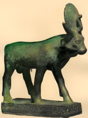

Апіс, в єгипетській міфології бог родючості у вигляді бика з сонячним диском. Центром культу Апіса був Мемфіс. Апіса вважали Ба (душею) бога Птаха, покровителя Мемфіса, а також бога сонця Ра. Культ бога родючості Апіса йде корінням в додинастичного епоху. Можливо, він сходить до образу священного бика, покровителя родючості, шанування якого було поширено практично по всьому Середземномор'ю. Єгиптяни вірили, що ритуальний біг священного бика запліднює поля. Апіс був пов'язаний з культом мертвих і вважався биком Осіріса. На саркофагах часто зображували біжить Апіса з мумією на спині.
З усіх священних тварин Апіс був найбільш почитаємо. Його культ неодноразово привертав увагу античних авторів. За Геродотом, священний бик Апіс повинен бути чорного забарвлення з особливими білими мітками на лобі, силуетом грифа на спині, мати дві пензлика на хвості і позначку у вигляді жука-скарабея під язиком. Народження бика з такими мітками являло собою живе втілення бога і було святом для древніх єгиптян. Апіса жерці містили при храмі бога Птаха в Мемфісі, одягали, годували і шанували, як бога. Рухи бика інтерпретувалися жерцями, пророкує майбутнє. Смерть священного бика вважалася великим горем для всіх. З ним робили так само, як з людиною: витягували нутрощі і складали їх у канопи, тіло муміфікували і ховали в величезному кам'яному саркофазі. Гранітні саркофаги священних биків досягають ваги до вісімдесяти тонн. Все саркофаги Апіса, крім одного, були розграбовані в давнину. Крім того, бикам споруджувалися статуї з сонячним диском між рогами.
За Птолемеїв відбулося повне злиття Апіса і Осіріса в єдине божество Серапіс. Для содерханія священних биків в Мемфісі, недалеко від храму Птаха, був посторить спеціальний Апейон. Корова, яка народила Апіса, теж шанувалася і містилася в особливій будівлі. У разі смерті бика вся країна занурювалася в траур, а його поховання і вибір наступника вважалися важливою державною справою. Апіс бальзамували і ховали по особливому ритуалу в спеціальному склепі Серапеніуме поблизу Мемфіса.